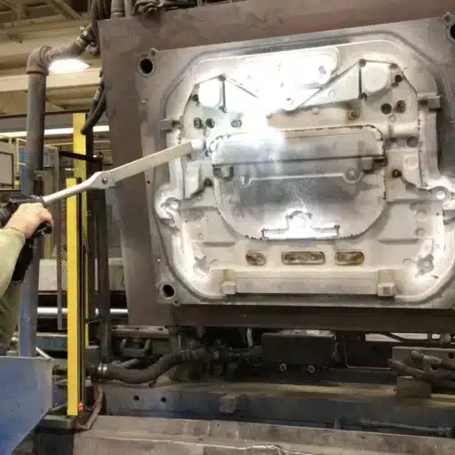
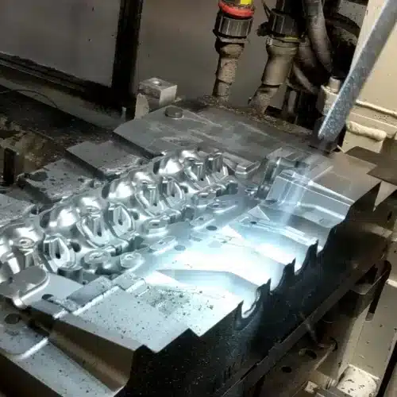

01
PERMANENT MOLD CLEANING
영구금형 세척


내화 코팅과 탄화 이형제는 제거하고,
파팅라인과 냉각채널은 그대로 유지합니다.
중력·저압 주조용 영구금형에서는 미세한 표면 변화도 용탕의 흐름과 제품 이형에 영향을 줍니다. 그런데 샌드블라스팅과 와이어브러시는 세척할 때마다 파팅라인을 둥글게 마모시키고 표면 마감을 떨어뜨려, 결국 금형 수명을 단축시킵니다.
드라이아이스 세척은 금형 표면을 마모시키지 않으면서 내화성 코팅, 그라파이트 윤활제, 탄화된 이형제를 복잡한 파팅라인과 내부 냉각채널에서 제거하는 방식으로 활용됩니다. 금형을 장착한 채 작동 온도에서 세척할 수 있는 경우 냉각과 분리에 드는 시간을 줄일 수 있습니다.
Cold Jet은 한 자동차 부품 주조공장이 드라이아이스 세척으로 전환한 뒤 금형 수명이 늘어난 사례를 제시하고 있습니다.
대표 대상
- 알루미늄 영구금형
- 중력 · 틸트 주조 금형
- 저압 주조(LPPM) 금형
- 브레이크 부품 금형